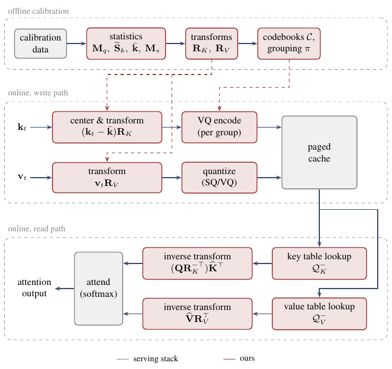

Spend Bits Where Queries Look:
KV Cache Vector Quantization with Attention-Preserving Transforms
Department of Electrical and Computer Engineering, University of Southern California
*Equal contribution
Overview
Long-context LLM decoding reads the key–value (KV) cache at every step. Loading it takes longer than computing attention over it, so throughput is bandwidth-bound — shrinking the cache raises both decoding speed and serving capacity.
The catch is what to preserve. Standard quantizers minimize the error in the stored keys and values, but attention never reads them directly: it reads them through the key–query inner products. NOVA-KV formulates KV cache compression as a transform coding problem whose distortion is the error in the attention products, and derives the optimal transforms in closed form from calibration statistics.

Three results
The optimal key transform is not orthogonal. It whitens by the query second-moment matrix before decorrelating. Every prior method constrains the transform to be a rotation, which we show is strictly suboptimal whenever the query statistics are anisotropic.
It satisfies a generalized Parseval relation. The attention-aware distortion becomes ordinary mean-squared error in the transform domain, so any off-the-shelf MSE-optimal vector quantizer can be applied directly to the coefficients.
Equal-volume grouping recovers the coding gain. Fixed-width cache layouts forbid the unequal codebooks that optimal bit allocation needs. Grouping coefficients into equal-volume partitions attains the variable-rate optimum with a single codebook size.
Results
(OSCAR: 25.3)
on reasoning & code
Long-context retrieval is where the methods separate. On Qwen3-8B at 128K context, scalar baselines collapse while NOVA-KV tracks the uncompressed reference:
| Method | BPE | 8K | 32K | 64K | 128K |
|---|---|---|---|---|---|
| BF16 (uncompressed) | 16 | 99.9 | 98.5 | 84.3 | 83.4 |
| QuaRot | 2.25 | 54.8 | 23.5 | 0.0 | 0.0 |
| OSCAR | 2.28 | 96.7 | 86.9 | 60.6 | 25.3 |
| NOVA-KV (ours) | 2.22 | 99.4 | 96.0 | 76.4 | 75.4 |
RULER NIAH mean accuracy (%), Qwen3-8B. Full results for four models, including Llama-3.1-8B and GPT-OSS-20B, are in the paper.

BibTeX
@article{fernandezmenduina2026novakv,
title = {Spend Bits Where Queries Look: KV Cache Vector Quantization
with Attention-Preserving Transforms},
author = {Fern\'andez-Mendui\~na, Samuel and Ziashahabi, Amir and
Pavez, Eduardo and Ortega, Antonio and Avestimehr, Salman},
journal = {arXiv preprint arXiv:ARXIV_ID},
year = {2026}
}